把一些数字按照一定的要求，排列在某一特定图形的规定位置上，这个图形叫做数阵图．数阵是由幻方演化出来的另一种数字图．幻方一般是正方形，图中纵向、横向、对角线方向的数字和相等．而数阵不仅有正方形、长方形，还有三角形、圆、多边形、星形、花瓣形、十字形，甚至多种图形的组合．按数字的组合形式，数阵图一般可分为三类，即辐射型数阵、封闭型数阵、复合型数阵．
【解题技巧】
首先要分清楚数阵的类型，不同的数阵类型有自身特殊的做题技巧．
1．封闭型数阵图的解题技巧是确定各边顶点所应填的数．为确定这些数，采用的方法是建立有关的等式，通过以最小值到最大值的讨论，来确定每条边上的几个数之和，再将和数进行拆分以找到顶点应填入的数，其余的数再利用和与顶点的数就容易被填出．
2．辐射型数阵图的解题技巧是通过所给条件建立有关等式，通过整除性的讨论，确定出中心数的取值，然后求出各边上数的和，最后确定边上其他的数．
3．复合型数阵图的解题技巧是要以中心数和顶点数为突破口．
解数阵问题的一般思路是：
1．求出条件中已知数字的和．
2．根据“和相等”，列出关系式，找出关键数，即重复使用的数．
3．确定重复用数后，对照“和相等”的条件，用尝试的方法，求出其他各数．有时，因数字存在不同的组合方法，答案往往不唯一．
【基本公式】
1．辐射型数阵图：若已知每条直线上各数之和，则重叠数＝（直线上各数之和×直线条数-已知各数之和）÷重叠次数．
2．封闭型数阵图：因为重叠数只重叠一次，所以已知各数之和＋重叠数之和＝每边各数之和×边数．
将2、3、4、5、6、7、8、9、10填入图中的9个方格中，使每行、每列及对角线之和相等，小明已经填了5个数，请将其余4个数填入．
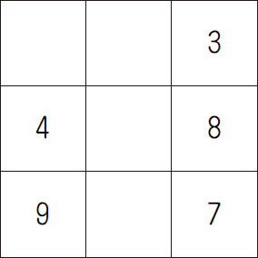
【答案】
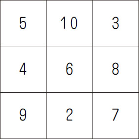
【解析】 先根据最左边一列求出幻和，然后根据这个和以及给出的数字逐步推算．已知3＋8＋7＝18；第二行中间的数是：18-8-4＝6；第三行中间的数是：18-7-9＝2；第一行第一个数是：18-4-9＝5；第一行中间的数是：18-3-5＝10．
【举一反三1】
（第十届“走美杯”初赛）小华需要构造一个3×3的乘积魔方，使得每行、每列、每条对角线上三个正整数的乘积都相等．现在他已经填入了2、3、6三个数，那当小华的乘积魔方构造完毕后，x 等于_____．
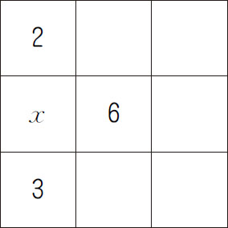
（第十四届“中环杯”初赛）将0～9填入下图圆圈中，每个数字只能使用一次，使得每条线段上的数字和都是13．
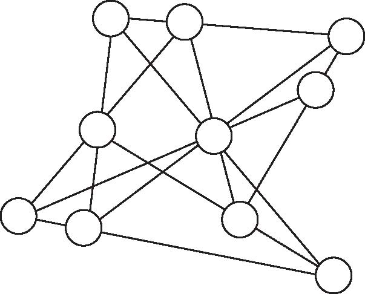
【答案】 见下图．
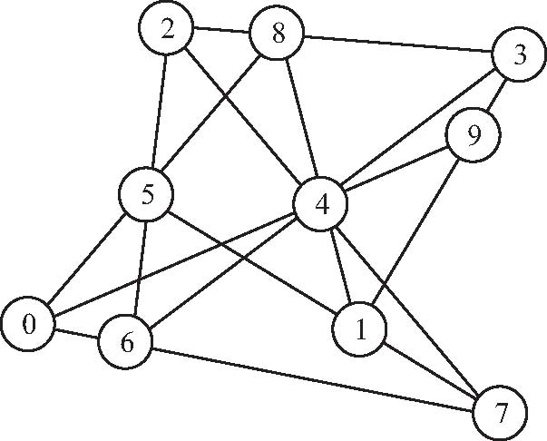
【解析】 如右图所示，a ～h 被算了3次，x 被算了4次，y 被算了2次，则10×13＝3×（0＋1＋2＋…＋9）＋x -y ，得y -x ＝5．由于a ＋g＋b ＝c ＋x ＋y ＝h＋e＋d ＝13，得f ＝6，所以c ＋d ＝a ＋h ＝b ＋x ＝7，得f ＝6．因此，a 、b 、c 、d 、x 、h 分别为0、2、3、4、5、7，e 、g 、y 分别为1、8、9．又y -x ＝5，所以y ＝8或9．若y ＝8，则x ＝3，b ＝4，e ＝1，g ＝9，a ＝0，d ＝10，矛盾；
所以y ＝9，x ＝4，b ＝3，e ＝1，g ＝8，a ＝2，d ＝7，c ＝0，h ＝5．
【举一反三2】
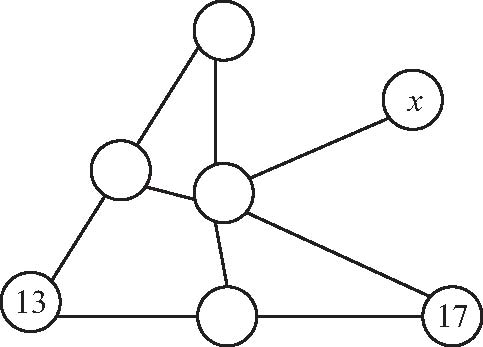
在右图的7个圆圈中各填一个数，要求每一条边上的三个数中，当中的数是两边数的平均数．现在已经填好了两个数，那么x 是_____．
（第十一届“走美杯”初赛）将0～5这6个数字中的4个数字填入下图的圆圈中，每条线段两端的数字作差（大减小），可以得到5个差，这5个差恰好为1～5，在所有满足条件的填法中，四位数的最大值是___．
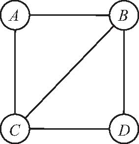
【答案】 5034．
【解析】 要使四位数A B C D 的值最大，A ＝5，并且B 和C 中有一个为0，B 作为百位数字应尽量大．若B ＝4，则C ＝0，但此时D无法填出，因此B 最大为3，B ＝3时，C ＝0，此时D ＝4．因此，这个四位数的最大值为5034．
【举一反三3】
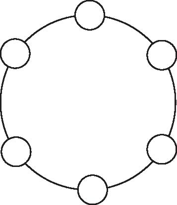
（第十一届“希望杯”初赛）将1、2、3、4、5、6随意填入图中的小圆圈内，将相邻两数相乘，再将所得的6个乘积相加，则得到的和最小是___．
（第十届“走美杯”决赛）请将1、2、3、4、5、6、8、9、10、12这10个数填入下图的圆圈中，每个数只用一次，使得每条线上4个数的和都相等．
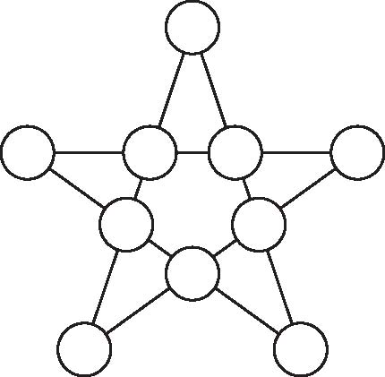
【答案】 见下图．
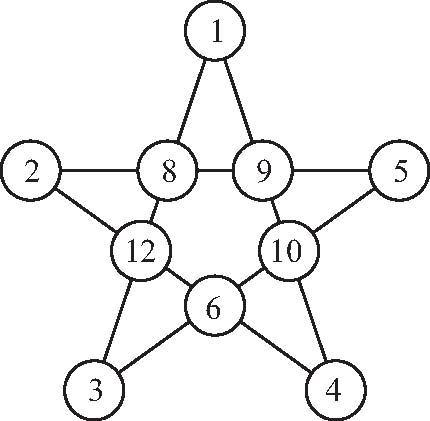
【解析】 根据题意，每条线上的和是：（1＋2＋3＋4＋5＋6＋8＋9＋10＋12）×2÷5＝24．假设5个顶点数是较小的，即1，2，3，4，5；又因为1＋3＋8＋12＝24，1＋4＋9＋10＝24，那么5个顶点，1与3在一条线上，1与4在一条线上，那么2与5在一条线上．因为每条线上的和是24，是一个偶数，根据奇数＋奇数＝偶数，也就是每条线上要么有2个奇数，要么没有奇数．那么3与5在一条线上，2与4在一条线上．因此，可以确定5个顶点的数如图①所示．还有一个奇数9，只能在1、4与2、5相交的点上，如图②所示．又因为1＋9＋4＋10＝24，5＋9＋2＋8＝24，那么1、9、4线上最后一个圆圈填10，5、9、2线上最后一个圆圈填8，如图③所示．又因为1＋8＋3＋12＝24，确定1、8、3线上最后一个圆圈填12；由5＋10＋3＋6＝24，确定5、10、3线上最后一个圆圈填6，如图④所示．
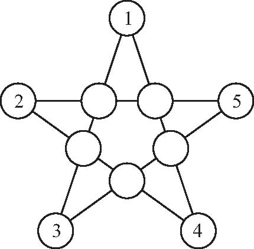 |
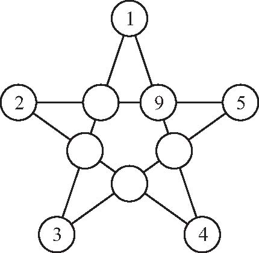 |
| 图① | 图② |
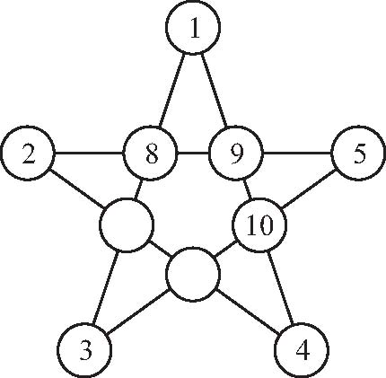 |
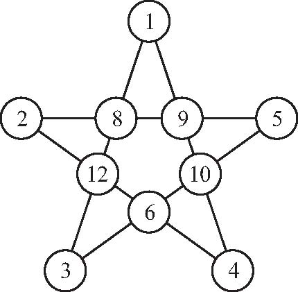 |
| 图③ | 图④ |
【举一反三4】
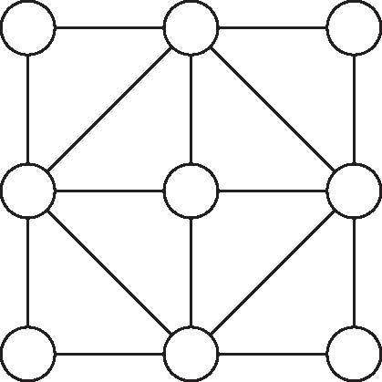
将2011～2019这九个自然数填入图中的圆圈中，使得每个以圆圈为顶点的正方形四个顶点上的数字之和相等，那么中心圆圈内填的数字是_____．
1．把1～8这8个数字填入下图中，使每条线及正方形四个顶点上的数的和相等．
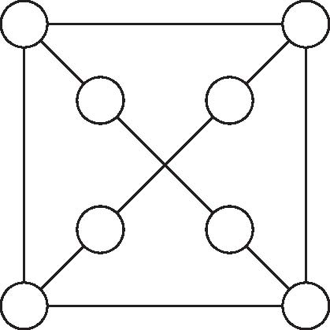
2．如图所示，“好”“伙”“伴”“助”“手”“参”“谋”这7个汉字代表1～7这7个数字．已知3条直线上的3个数相加、2个圆圈上3个数相加所得的5个和都相等．图中间的“好”代表___．
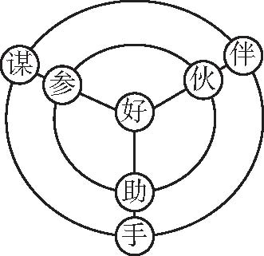
3．根据图中的数字关系，算一算，“？”＝___．
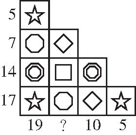
4．自然数1～12中有一些已经填入图中的圆圈内，请将剩下的分别填入空圆圈内，使图中每个三角形（共四个）周边上的数字之和都相等．
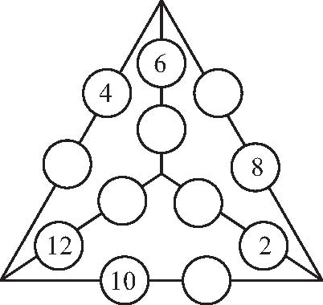
5．在图中的空格中填入四个数，使每个横行、每个竖行的三个数的乘积都相等．
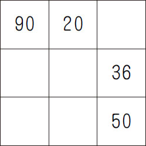
6．把1～10这十个自然数分别填入图中的圆圈内，使每个圆圈中的六个数之和都是36．
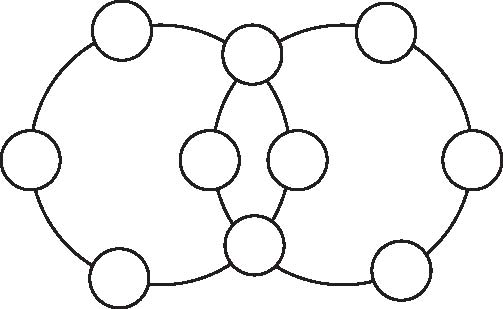
7．如图①所示，在圆的5条直径的两端分别写着1～10．现在请你调整一部分数的位置，但保留1、10、5、6不动，使任何两个相邻的数之和都等于直径另一端的相邻两数之和，填在如图②所示的圆上．
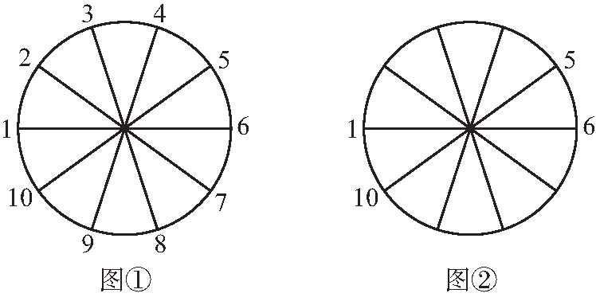
8．把1991、1992、1993、1994、1995分别填入图中的5个方格中，使得横排的三个方格中的数的和等于竖列的三个方格中的数的和，则中间方格中能填的数是____．
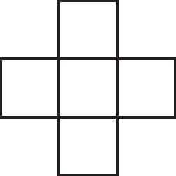
9．请你从1～40中选出10个各不相同的整数填入图中的圆圈里，使得每个数均为与它相邻的两个数的最大公约数或最小公倍数．
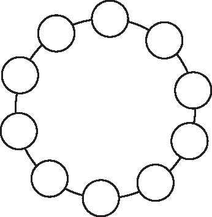
10．如图所示，在每个小圆圈里填上一个数，使得每一条直线上的三个数的和都等于大圆圈上三个数的和．
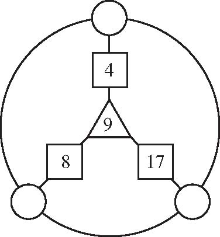
11．据说美国有一位铁路职工花了50余年的业余时间，研究得到了一个六角形幻方，如图所示的每一个圆圈中分别填写了1、2、…、19中的一个数字（不同的圆圈中填写的数字各不相同），使得图中每一个横或斜方向的线段上几个圆圈内的数之和都相等．现在已知该图中7个圆圈内的数字，则图中的x ＝___．
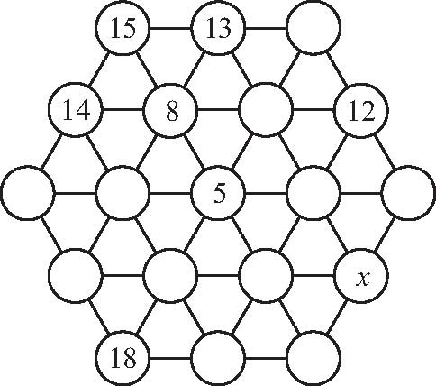